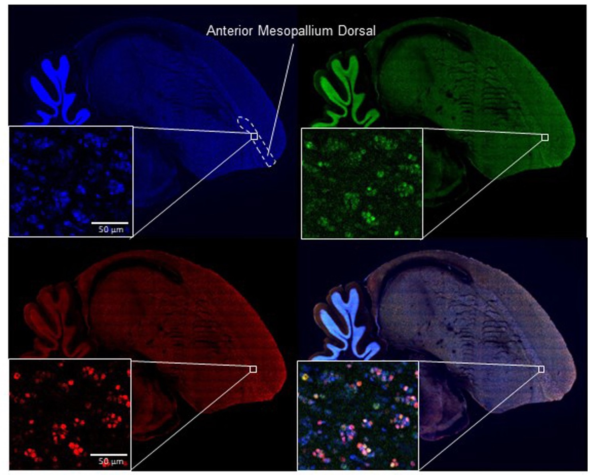

Research

Urban Ecology & Evolution
Global urbanization is expanding and intensifying - there has been a tripling of urban land cover since 2000 and 68% of people are projected to inhabit cities by 2050. With urbanization comes unprecedented biotic and abiotic changes such as air, noise and light pollution, impervious surfaces, habitat fragmentation, novel inter- and intra-species interactions and an overall reduction in biodiversity. As consequence, many species avoid and/or decline in cities, but others persist and even thrive. For city dwellers, these environmental changes impose selection pressure that may be driving evolution and population divergence. Furthermore, urbanization affects neutral evolutionary processes that impact the distribution of genetic variation, which can in turn affect the adaptive potential and persistence of species. Understanding the variation in traits within and across species along an urban gradient can help us predict how species will adapt in the future to an increasingly warm and urbanized landscape.
Artificial Light at Night
tl;dr Check out this podcast and comedy-show-turned-podcast where I talk about ALAN and birds!
For 4 billion years life has evolved under dark nights, brightened only by the moon and stars. As consequence, mechanisms for detecting and responding to patterns of light and dark exist in all organisms and play a key role in the timing of cyclic behavioral and physiological processes. Artificial light at night (ALAN) disrupts these natural photoperiodic cues, and has severe effects on behavior, physiology, health, and ecosystem function. Furthermore, ALAN may be one of the most universally threatening pollutants on earth - reaching beyond city limits into national parks and conservation reserves, and affecting nearly all ecosystems from dense forests to coastlines and oceans. Understanding how to mitigate the effects of ALAN on organisms is a prominent conservation priority. In the lab, my research aims to understand the effects of light pollution in isolation from other urban stressors, and describing the mechanisms by which night light affects behavior, physiology and health in vertebrates.
How are hummingbirds adapting to urbanization?
What kind of adaptations allow urban exploitation of certain species or populations? As an NSF Postdoctoral Fellow, I am studying hummingbirds that live in cities (and those that don’t) to understand how populations are locally adapting to urban landscapes. I am measuring morphological and physiological traits, as well as sequencing their genome in order to identify the eco-evolutionary processes governing species responses to urbanization. This work is in collaboration with Dr. Kristin Winchell at New York University, Dr. Alejandro Rico-Guevara at the University of Washington, and Dr. Owen McMillan at the Smithsonian Tropical Research Institute.

Luxury Effects in Urban Ecosystems
Spatially distant cities often resemble each other more than surrounding natural habitats. However, within urban landscapes there is also substantial heterogeneity, as greenness often covaries with socioeconomic variables such as household income and historical redlining. This can lead to the “Luxury Effect” where biodiversity is positively correlated with surrounding affluence. I am interested in understanding how the socioeconomic landscape effects urban wildlife, & and understanding how public repositories such as iNaturalist and eBird may contribute to potential biases based on user demographics. My current project examining luxury effects on biodiversity in New York City parks has received some amazing support from the broader NYC community! Check out this blog post, article in the Gothamist (and WNYC Radio), and short video below.


Isolating pollutants in the lab
Cities are full of environmental changes that can have energetic consequences for individuals, effecting survival and reproduction. This poses a problem for conservation - but how can we design better cities if we don’t know which change is causing the problem? In the lab, we can isolate components of urbanization to detangle their respective effects. For example, I used zebra finches (Taeniopygia guttata) to study how artificial light at night affects behavior and physiology. In this controlled environment I can measure activity, sleep and circadian rhythms using an automated perch that records movement every second 24/7. I use bioassays to measure physiological correlates of behavior such as hormonal rhythms (melatonin, glucocorticoids), and physiological stress (e.g. glucocorticoids, oxidative stress, biomarkers of cardiovascular dysfunction).
Molecular Mechanisms
What are the molecular mechanisms underlying behavioral and physiological responses? To understand this, my research involves using next-generation sequencing techniques to measure differences in gene expression resulting from exposure to various environmental conditions. For example, I have shown that behavioral and endocrine disruption resulting from light pollution exposure occurs independently from the central circadian clock. RNA sequencing of red blood cells, which is minimally invasive and allows for repeated measures of gene expression within-individuals, revealed processes underlying habituation to light pollution over time. I have also developed methods in immunocytochemistry enabling us to to map neuron activity in the brain during exposure to night-light.

Figure from Hui et al., 2023
Global biases in urban ecology
Current understanding of urban ecology and evolution is alarmingly biased, stemming disproportionally from the wealthiest nations. This is a problem because the evolutionary outcomes of urbanization likely depend on geographic and ecological context and can vary substantially across latitude. Latin America represents the second most urbanized global region, with 81% of habitants living in urban areas, and contains over 40% of the world’s avian biodiversity, yet current knowledge about the effect of urbanization on organisms is biased toward temperate regions (e.g. North America and Europe) with few studies focused in the tropics.
My research takes advantage of cities world-wide as replicated experiments to investigate how environmental context shapes the evolutionary outcomes of urbanization and identify factors that facilitate or constrain species convergence. In doing so, I am to rectify these global biases in knowledge, elevate research & researchers in Central and South America, and help narrow the hemispheric gap that divides our science.

This part of my research is still building - stay tuned as I build parallel urban field systems in Puerto Rico, New York, Seattle, Colombia (Bogotá and Fusagasugá), Panama (Panama City and Gamboa), and Chile (Santiago).
I am always looking for community members to help me study hummingbirds. If you live in any of these cities (or surrounding rural areas), see hummingbirds around, and want to help me study them - send me an email! I would be extra excited if you have hummingbird feeders or would be interested in starting to maintain one.